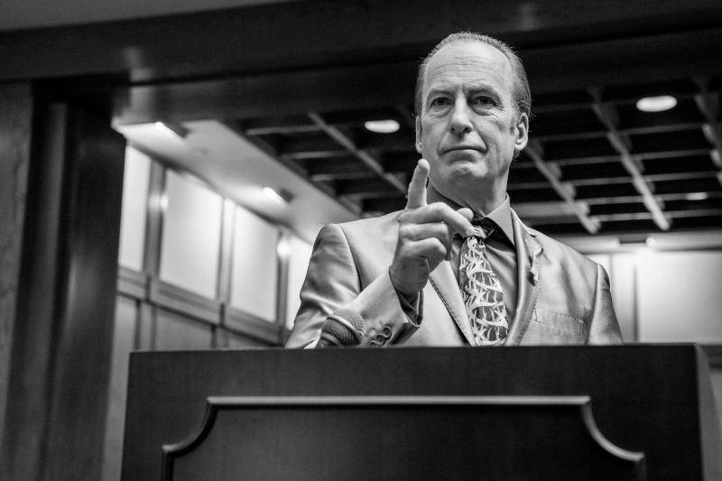

Uma série de comédia que segue a vida de funcionários
excêntricos de uma empresa de papelaria na cidade fictícia de Scranton, Pensilvânia.
Criadores: Greg Daniels • Ricky Gervais • Stephen Merchant
Data de lançamento: 24 de março de 2005
Elenco: Steve Carell • Rainn Wilson • John Krasinski •
Jenna Fisher • Ed Helms
AVALIAÇÃO IMDb
9.0/10
ONDE ASSISTIR?
PORQUE GOSTO DESTA SÉRIE?
Sendo que sou um grande apreciador e consumidor de conteúdos humorísticos, dificilmente
The Office iria ficar fora das minhas escolhas. Até certa altura não a colocava no meu
top geral de séries, apenas a comparava a outras séries de comédia, até que a minha
interpretação de The Office passou para lá de a achar uma séria extremamente engraçada.
The Office é, acima de tudo, uma série que inovou na narrativa, utilizando o formato de
falso documentário para criar uma experiência única e interessante. A série quebrou todas
as barreiras entre a ficção e a realidade, criando um senso de imersão e identificação com
os personagens. É ainda uma série que faz comentários sobre a sociedade contemporânea e as
suas instituições. A série explora temas relevantes, como hierarquia, poder, preconceito,
amizade e amor, o que ajuda a criar um senso de relevância e significado para o espectador.
EPISÓDIO FAVORITO
Esta é provavelmente a série onde tenho mais dificuldade em distinguir um episódio favorito.
Em 9 temporadas recheadas de momentos hilariantes em termos de guião e acting, torna-se dificil
escolher apenas um episódio. Ainda assim, um que me ficou bastante marcado foi o "The Dundies".
É um episódio simplesmente hilariante que usa o humor para abordar as idiossincrasias e os
dramas do ambiente de trabalho."The Dundies" apresenta Michael Scott num que é provavelmente
dos seus momentos mais vulneráveis e humanos, o que ajuda a torná-lo um personagem mais cativante
e empático para além daquela imagem humorística sem quaisquer filtros. Mas à parte do quão engraçado
é o episódio, a menasgem que retiro é a importância de reconhecer o trabalho dos outros e criar
um senso de comunidade no ambiente de trabalho.
PERSONAGEM FAVORITO
O meu personagem favorito é claramente o Michael Scott, pois trata-se de um personagem bastante
complexo que tem motivações conflitantes e lida com muitas questões emocionais ao longo da série.
Apesar da imagem cómica muitas vezes sem quaisquer limites, ele é no fundo um homem solitário e
sensível que procura desesperadamente aprovação e aceitação dos outros, mas muitas vezes comete
erros que o afastam das pessoas. Michael Scott passa por uma transformação significativa ao longo
da série, aprendendo lições importantes sobre liderança, relacionamentos e empatia.
VER A SEGUIR
Breaking Bad
A transformação de um professor de química de meia-idade num
poderoso traficante de droga enquanto enfrenta as consequências
das suas escolhas num mundo perigoso e implacável.

Better Call Saul
A história de origem do advogado astuto e carismático Saul Goodman
antes dos eventos de "Breaking Bad".